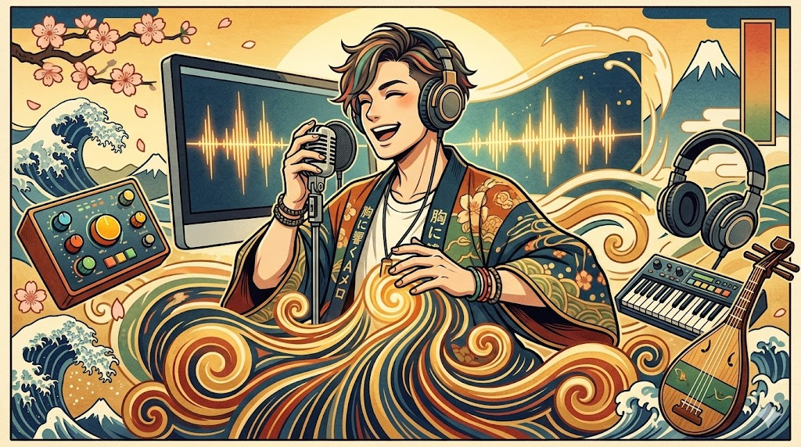

どうも、深夜のスタジオからエナジードリンク片手に失礼します。「AI音楽制作スタジオ」のマスターライター、Lです。最近、AIにCOMPLEX風のバキバキなビートを生成させて、そこに自作のシンセを重ねる深夜作業にハマっているんですが、改めて聴き返すと吉川晃司さんのヴォーカルって、唯一無二のカッコよさがありますよね。
「BE MY BABY」や「1990」、「恋をとめないで」を宅録やカラオケで歌う際、『高音は出るのに、Aメロの低音がスカスカで雰囲気が出ない…』という悩み、めちゃくちゃ分かります。あの独特の「ドス」の効いた低音は、ただ声を低くするだけじゃなく、物理的な「響かせ方」に秘密があるんです。
吉川晃司さんの声は、華やかな中高音の響きと、地声でしっかり支えられた重厚な低音（チェストボイス）の対比が最大の魅力です。特にCOMPLEX時代の楽曲は、この低域の安定感が楽曲の「ドライブ感」を支えています。
なぜ低音が安定しないのか？3つの構造的分析
自分の歌声をDAWで波形解析してみると一目瞭然なのですが、低音が浮いてしまう時は、声帯が「低音を鳴らすモード」になっていないことが多いです。
- 喉の力み（ハイラリンクス）: 高音への意識が強すぎて、喉仏が上がったまま声帯が伸びきっているパターン。
- 共鳴の迷子: 響きが鼻や頭に逃げてしまい、チェスト（胸空間）に共鳴が落ちてこない。
- 呼気の支え不足: 下腹部の支えが弱く、声帯が正しく閉じずに「息漏れ」だけが目立ってしまう。
【毎日5分】吉川流・低音強化トレーニングメニュー
プロの現場でも推奨される、効率的なメソッドを優先度順に紹介します。1〜2週間続けるだけで、マイク乗りの良い「太い声」に変わりますよ。
💡 ファクトチェック：SOVTE（半閉鎖声道訓練）
ストロー発声などのSOVTEは、科学的に声帯の振動効率を高めることが証明されています。喉の負担を最小限に抑えつつ、声帯を厚く閉じる感覚を養えるため、低音開発には必須のメニューです。
参照: National Institutes of Health (PMC)
1. あくび発声（喉の解放）
大きくあくびをした直後の「あー」という状態で、低い「うー」「おー」を出してみてください。喉仏が下がり、共鳴空間が広がる感覚を掴むのが目的です。これが吉川ヴォーカル特有の「奥行き」を作ります。
2. ストロー発声
細めのストローをくわえて、低い音で「んー」とハミングします。無理なく声帯に適度な圧がかかり、低音の輪郭がはっきりしてきます。
3. チェストレゾナンス（胸の響き）
手を胸に当て、振動を感じながら低い「んーーー」を出し、そのまま「おー」「あー」と母音を広げていきます。響きを頭から胸へ「着地」させるイメージです。
プロの視点：低音の魅力を倍増させるDTM機材
練習と並行してこだわりたいのが「集音環境」です。低音は高音に比べてエネルギーが弱いため、安価なマイクだと「ボソボソ」としたノイズに埋もれがちです。吉川晃司さんのような艶のある低音を録るなら、以下のクラスの機材が必須です。
おすすめ機材：Audio-Technica AT4040
世界中のスタジオの標準機。2万円クラスのマイクとは一線を画す、圧倒的な中低域の厚みが特徴です。吉川さんのような「ハスキーだけど芯がある声」を余すことなく拾いきります。
💡 実戦テク：マイクの「近接効果」を活用せよ
指向性マイクには「近づくほど低域が強調される」という特性があります。Aメロのささやくような低音パートでは、あえてマイクに3〜5cmまで近づくことで、EQ加工では作れない自然でリッチな低音が得られます。
COMPLEX楽曲攻略：歌い方の極意
- キー設定の最適化: 「1990」などは男性でもかなり低いので、まずはDAWやカラオケでキーを -2〜-4下げ、低音が「鳴る」身体の感覚を覚えてから原曲キーに戻しましょう。
- エッジボイスのスパイス: 「抱きしめた〜」などのフレーズに、あえて「ガラガラ」としたエッジボイスを少し混ぜると、吉川さん特有のセクシーなニュアンスが出ます。
さらに詳しい録音テクニックや機材比較は、こちらのプロフェッショナル向けガイドもチェック：Sound On Sound (Vocals Guide)
まとめ：低音は「技術と機材」で支配できる
低音は才能だけではなく、喉の解放と正しい共鳴、そしてそれを拾い上げる機材の組み合わせで決まります。胸に響きを感じる瞬間が増えてくれば、あなたの「BE MY BABY」は格段にプロっぽくなるはずです！
今回紹介したAT4040のような「一生モノ」のマイクを手に入れて、あなたの声を最高のクオリティで形に残してみませんか？
🛒 おすすめ関連商品

¥39,600

¥39,600

¥43,560